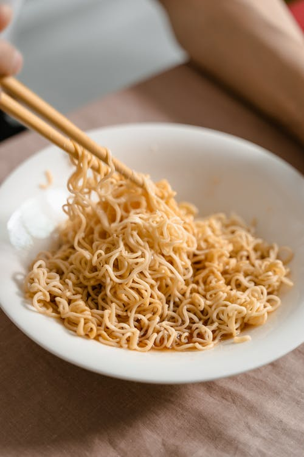

Special Ramen

A nice way to make ordinary ramen special!"
Ramen is one of those meals that just hits the right spot when nothing else will.
This spin on ramen will elevate your comfort food to the utmost comfort!
There are many variations on the classic instant ramen mix that claim to make it
fancy or supreme, but I think that this version is the easiest,
and potentialy most delicious variant.
Ingredient List:
- A packet of instant ramen
- A cup of milk
- A tablespoon of bacon fat
- Parmesan cheese
- Optional green onion
Directions:
- Get a medium sized non-stick skillet and pour a cup of water. Heat until starting to boil
- Add just the ramen noodles, cook until most of water is gone and noodles are somehwat tender
- Add the cup of milk to the noodles, and add the seasoning packet. Mix together until seasonin is even
- Add the tablespoon of bacon fat, render the fat and mix it all together
- Continue cooking until the mixture is starting to thicken, lower heat and grate parmesan cheese into the skillet. Add as much as you'd like
- Turn off heat, and make sure the ramen is thoroughly mixed. For garnish, sprinkle some sliced green onion while the ramen is still hot
- Enjoy!